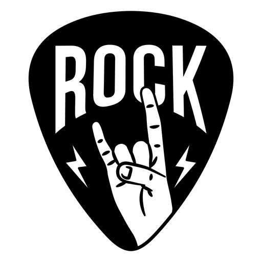

Classic Rock Music!
Table of contents

In the early 1980s, the album-oriented rock radio format gave way to classic rock. It includes
rock music from the
mid-1960s to the mid-1990s in the United States, especially focusing on commercially successful blues rock and hard rock
that were made popular by the AOR format in the 1970s. By the end of the 1990s, the baby boomer population had grown
more and more fond of the radio format.

My Top Ten Bands
| Rank |
Band |
| 1 |
Led Zeppelin |
| 2 |
Pink Floyd |
| 3 |
Journey |
| 4 |
Rolling Stones |
| 5 |
AC/DC |
| 6 |
Queen |
| 7 |
Guns N' Roses |
| 8 |
Eagles |
| 9 |
ZZ-Top |
| 10 |
Aerosmith |
Although classic rock has traditionally been more popular with older listeners, the Internet,
and digital downloading have increased younger listeners' exposure to this genre's music. Some classic
rock radio stations also play a select few recently released songs that fit the station's sound or are by
veteran artists who are still active and making new music.

Why should you listen to Classic rock?